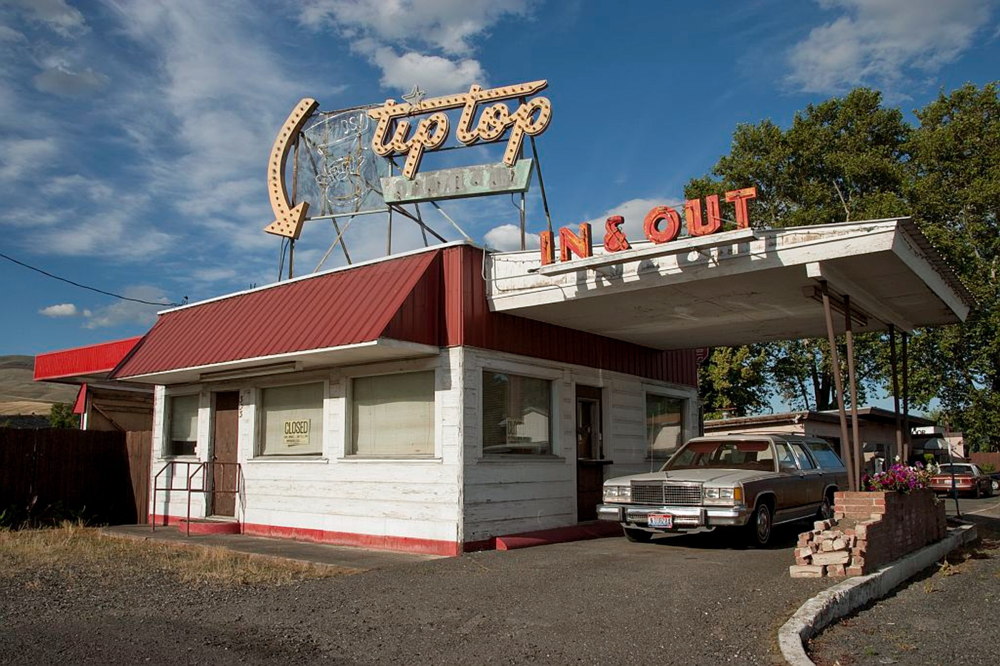
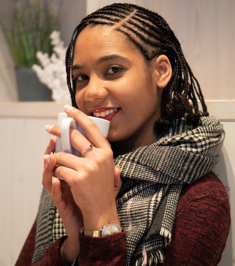
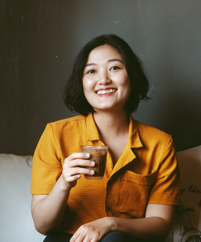
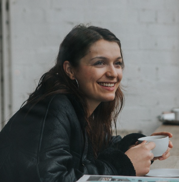
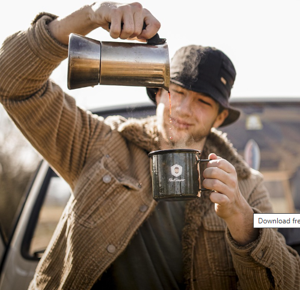

Our Story
Bean & Bloom Café was founded in 1998 by an immigrant from Germany named Manuel Neuer. What began as a small convenience market, Up Top Store, slowly evolved into a cozy neighborhood spot where people could grab a warm drink, talk, and relax. Over time, Suyog transformed that corner shop into a full Café , blending his roots, hard work, and love for people into every cup.
Today, Bean & Bloom Café serves students, office workers, and neighbors who stop in for strong coffee, fresh pastries, and a calm place to recharge. The goal is simple: keep the welcoming spirit of that first shop while constantly growing, learning, and brewing something better for the community.
STORE HOURS:
| Day | Open | Close |
|---|---|---|
| Monday | 5 AM | 10 PM |
| Tuesday | 5 AM | 10 PM |
| Wednesday | 5 AM | 10 PM |
| Thursday | 5 AM | 10 PM |
| Friday | 5 AM | 10 PM |
| Saturday | 7 AM | 9 PM |
| Sunday | 7 AM | 9 PM |
AMENITIES :
- Free high-speed Wi-Fi and plenty of outlets
- Quiet study nooks & large shared tables
- Plant-filled reading corner with community book swap
Meet the Team
Manuel - Founder & Owner
Manuel founded Bean & Bloom Café with a passion for community and craftsmanship. He oversees everything from partnerships to menu development, ensuring the Café remains welcoming, sustainable, and true to its values.
Suyog - Manager
Suyog is the manager of Bean & Bloom Café and works in the café every day. He is young but he helps with brewing, checks on customers, supports the team, and makes sure everything feels welcoming and comfortable. Suyog loves good coffee and enjoys talking with guests, making the café a friendly place for everyone.
Jordan - Kitchen Staff
Jordan keeps our kitchen running smoothly by preparing sandwiches, pastries, and all food items with consistency and care. With great attention to detail and fast hands during rush hour, Jordan makes sure every order comes out fresh, warm, and perfectly made.
Kenji - Brew Specialist
Kenji prepares our pour-over and specialty brews with care and precision. He enjoys teaching guests about beans and brewing styles and is always focused on great quality.
Liam - Social Media Manager
Liam manages our café's photos, videos, and online presence. He captures the cozy feel of Bean & Bloom Café and keeps our social media fun and active for the community.
Maya - Customer Experience Lead
Maya welcomes guests as soon as they arrive and helps create a warm, comfortable atmosphere. She keeps the front of the café running smoothly and supports both customers and staff.
Nia - Café Host & Tea Specialist
Nia prepares our tea drinks and enjoys helping guests choose something they'll love. Her friendly personality and bright smile make every visit to the café more enjoyable.
Asha - Barista
Asha is a dedicated barista who focuses on making smooth and consistent espresso. She enjoys training new staff and keeping the café’s drink quality high every day.
Elena - Head Roaster
Elena oversees our roasting process and works to bring out the best flavors in every batch. Her attention to detail helps make our coffee rich, balanced, and memorable.
Marcus - Lead Barista
Marcus creates espresso drinks and seasonal specials with creativity and care. He is known for his warm personality and outstanding customer service.
Sophia - Pastry Specialist
Sophia prepares our baked goods fresh each morning, from flaky croissants to vegan desserts. Her pastries pair perfectly with our drinks and bring comfort to every visit.
Learn more about our partnerships: Fair Trade Certified.